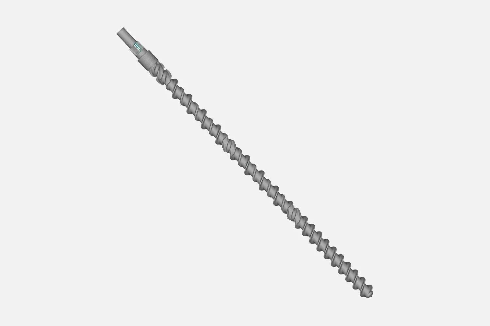
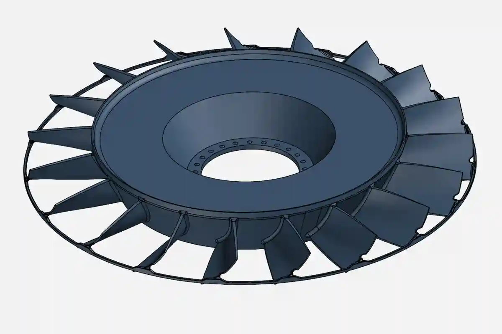

What we do for machinery and plant maintenance
| Job | What you get |
|---|---|
| Worn or broken spare with no drawing | A scan rebuilt as an editable STEP model your machine shop can make from (the full workflow is in spare part with no drawing) |
| Obsolete part from a machine the maker no longer supports | CAD of the part, so a replacement can be made again |
| Imported part to be made locally | The shape captured and modelled, so a local shop can quote and make it |
| Remade part before it goes on the machine | The new part scanned and compared with the CAD, so errors show before fitting |
| Housing, bracket or cover that must fit an existing machine | The mating faces, holes and bosses captured, with the model checked against the scan |
| Large part or plant item that cannot be moved | Scanned where it stands, at your plant |
Parts we can scan: gears and splined shafts, shafts and sleeves, pump and valve bodies, gear housings and covers, brackets, impellers and fan wheels, extruder screws, crusher liners, castings and forgings. Our scanner maker lists machinery manufacturing, energy, rail, automotive and aerospace among the industries the scanners are used in, so parts from these fields can be scanned.

Machine part types and what to expect
| Part type | What the scan can capture | Limit to know |
|---|---|---|
| Gears and splined shafts | Tooth form, tooth count, bore, keyway, spline shape and the shaft steps | Shape capture for remaking, not a gear grade, lead, pitch or runout inspection |
| Impellers and fan wheels | Vane profile and twist, hub, shrouds and blade edges | Deep passages in a closed impeller may sit out of line of sight; we judge from your photos first |
| Pump, valve and gear housings and covers | Outer form, mounting faces, bosses, ports and holes | Internal passages that the scanner cannot see are not captured |
| Shafts, sleeves and screws | Diameters, steps, grooves and keyways | Material and heat treatment are not read from a scan |
| Liners and wear plates | A liner can be scanned and its worn shape compared with the CAD | Worn faces are modelled as scanned unless you give the original size |
| Large plant items | The item in place, at your site | Access and space decide the method |

How a machinery job runs
- Brief. You send photos, the approximate size and weight, the material, what the part does and what you want: CAD, an inspection, or both. Send any old drawing or catalogue data you have.
- 3D scan. Handheld blue-laser scanning suits small to medium parts; optical-tracking scanning suits large parts. We scan at our Coimbatore facility or where the machine stands, so heavy items need not be moved. Very shiny machined faces can change the method, so tell us the surface.
- Mesh cleaning. The scan is merged, cleaned and checked for gaps. The mesh can be delivered as STL or PLY.
- Rebuild or compare. For a part with no drawing, we rebuild the surfaces as clean, editable CAD from sections and features, not as a copy of the rough mesh. Worn areas are modelled as scanned unless you give us the original dimensions. For a remade part, the new scan is aligned to the CAD and shown as a deviation colour map. We do not promise a tolerance until we have seen the part and its job.
- Report. Inspection reports are normally delivered in 2 to 3 days.
- Delivery. STEP (IGES or Parasolid on request), the mesh if you want it, and a PDF report for inspections.

Design changes, material choice and the machining or casting of the new part stay with your engineers and shop. We supply the scan data, the CAD and the inspection report.
Scan, CMM arm or both
A 3D scan covers the whole part, which suits freeform shapes such as impeller vanes, wear surfaces and housings, where a few probe points would miss the variation. For bores, datum-based features and tight machined dimensions, a portable CMM arm is the better tool, and some checks suit both. See our CMM inspection services.

What decides the cost
We quote per job and do not publish a price list. The main drivers are:
- the size, weight and number of parts,
- how complex the shape is (a plain shaft is simpler than a vaned impeller),
- the tolerance you work to,
- the output (a colour map is quicker than a full CAD model),
- on-site work, travel and accommodation.
Send a photo and a short description and we reply with a written quote.
Why scan first
A scanner captures the whole part, including worn and freeform surfaces that are hard to measure by hand, and shows variation across the surface instead of at a few points. The JINUOSH Vertex handheld blue-laser scanners we distribute are specified by the maker at up to 0.020 mm (Vertex3D and Vertex3D Pro) and 0.025 mm (Vertex Tracker). That is a scanner specification, not a guarantee for every part; we tell you the expected accuracy for your part before we start. See the JINUOSH Vertex scanners.
Part of a wider service
This is one use of our 3D scanning services in India and reverse engineering services in India. For cast parts and patterns, see casting and foundry 3D scanning. For tools, see mould and die 3D scanning. For vehicle parts, see automotive 3D scanning and reverse engineering. In Tamil Nadu? See reverse engineering in Tamil Nadu. In Coimbatore? See 3D scanning services in Coimbatore. Choosing a provider? Read how to choose a 3D scanning service, or compare JINUOSH Vertex with other scanner brands. Need a printed copy or fit-check of a scanned part? See 3D printing from your 3D scan. For how a scan becomes an editable model, read scan to CAD in SolidWorks.
About us
- Operating since December 2019, based in Coimbatore, Tamil Nadu; we travel to your site across India and serve the UAE as a service area.
- Distributor of JINUOSH Vertex 3D scanners in India, so we know the equipment we use.
- One team for scanning, reverse engineering, scan to CAD and inspection.
- Office hours 9 AM to 7 PM.
Send a photo and a short description of your machine part for a quote or email info@vsharksolutions.com.
Last reviewed: